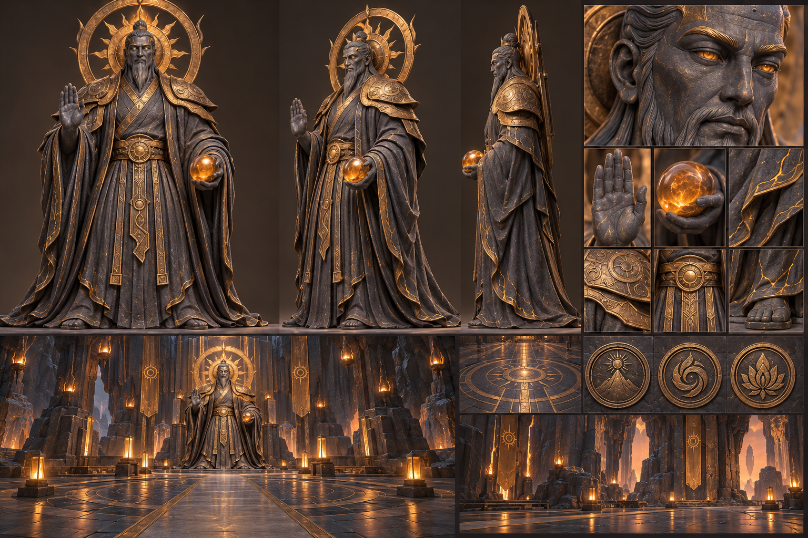
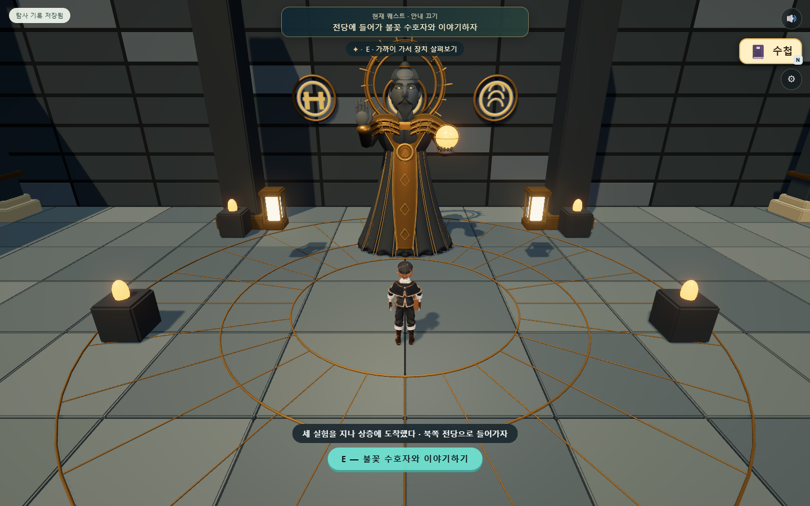

목표 레퍼런스 · 생성 이미지

질감·인체·의복의 목표다. 실제 게임 화면과 구분한다.
목표 시안과 실제 웹 3D 모델을 나란히 확인한다. 오른쪽은 드래그로 회전하고 휠로 확대한다.

질감·인체·의복의 목표다. 실제 게임 화면과 구분한다.
실제 재질은 현무암·청동 단색 위주이며, 목표 시안의 미세 질감과 조각 밀도에는 차이가 있다.

분기 다리 → 용암 주조실 → 증기 승강기 → 수호자 대화 → 지혜 기록 → 자동 퇴장·밀봉.